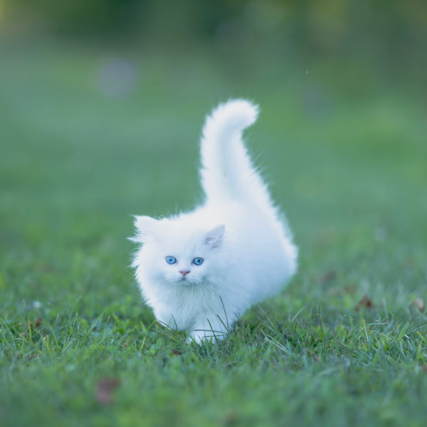

Текст та рисунки у рядку коливаються

Послідовність рисунків пробігає знизу до гори та з’являється знову.
Послідовність рисунків пробігає згори до низу із зупинкою у границі області.
Повільний рух з запізненням
Швидкий рух без запізнення